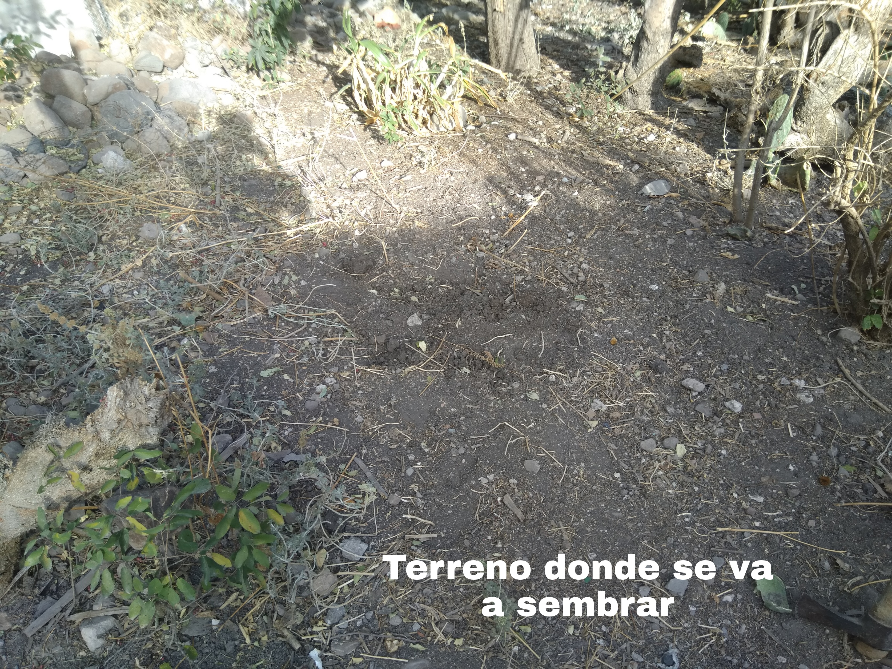
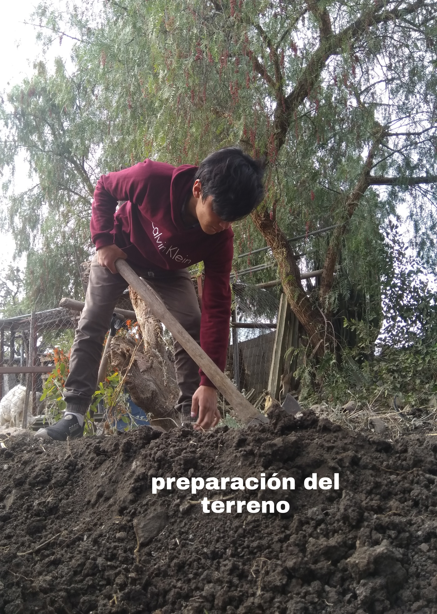

Lo que sigue será de gran ayuda para nuestras plantas y protegerlas, ya que se deben de proteger ante amenazas principalmente de los animales como las gallinas, aves, entre otros, una solución a este problema es colocar una barrera, en forma de cerca con maya para poder proteger nuestro huerto, por la parte de arriba de igual manera se puede colocar maya con pequeños orificios donde no alcancen a pasar pájaros o alguna otra ave, pero donde si alcancen a pasar los rayos del sol. En cuanto a regar las plantas, esto se debe de hacer de forma suave, de preferencia s riega el suelo, no las plantas (son las raíces las que absorben el agua, no las hojas). Una forma eficiente es colocando una botella de bebida desechable, con perforaciones finas a un lado, podremos conectar la manguera con esta botella creando así una regadera que solo regará la superficie del suelo.
Mi huerto
(Experiencias personales, opinión, tips y conclusión)
Este apartado es muy importante ya que no fue nada fácil, para iniciar este proyecto estuve viendo semanas antes donde sería
conveniente tener un huerto en mi casa, debido a que en donde vivo se encuentran animales domésticos como gallinas, cabras,
ovejas, vacas e incluso caballos, por lo que tuve que buscar un lugar donde poner mi huerto y que no corriera el riesgo de ser
aplastado o afectado físicamente, así que decidí instalarlo en un patio trasero, donde anteriormente se usaba para plantar, el
patio trasero le pertenece a mi abuelita, por lo que tuve que pedir permiso para usarlo, el terreno estaba en pésimas condiciones
para sembrar, había plantas ya muy secas, había incluso residuos inorgánicos como pilas, botellas de vidrio rotas, botes de
aluminio, botes oxidados y plástico; tuve que limpiar la zona para poder preparar el terreno para eventualmente después sembrar.

En la fotografía no se alcanzaba a distinguir, pero cuando me dispuse a limpiar el terreno en la tierra había muchos residuos,
de igual manera no se alcanza a notar pero del lado superior derecho se alcanzan a notar unas plantas muy secas, después de
plantar tuve que regar esas plantas para ver si podían volver a retoñar, así que decidí incluirlas en mi proyecto y tratar
de que esas plantas volvieran a la vida, actualmente se ven muy diferentes a como se ven en la foto.

Como se puede notar en la imagen, después de haber limpiado la
superficie del terreno me dispuse a aflojar la tierra y
así mismo si encontraba residuos los retiraba.
Aproximadamente me llevé una hora escarbando y limpiando el terreno.
Como se puede notar en la imagen, después de haber limpiado la superficie del terreno me dispuse a aflojar la tierra y así mismo si encontraba residuos los retiraba. Aproximadamente me llevé una hora escarbando y limpiando el terreno.